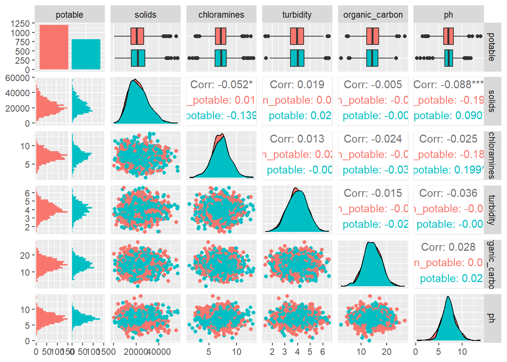
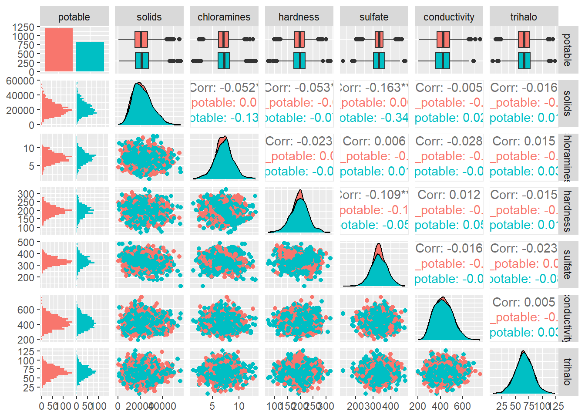

We’ll be investigating a dataset containing measurements for bodies of water with the ultimate goal of predicting the potability (safeness to drink) of the water.
Reading in the Data
We use the read.csv function to bring in our data:
water <-read.csv("water_potability.csv")head(water)
Let’s check how many rows and columns our data set has:
dim(water)
[1] 3276 10
There are 3276 rows in the data set, each with 10 columns. The preview of the table shows some missing values, so we’ll use colsums() to examine this missingness:
There are a considerable number of missing values for sulfate, ph, and trihalomethanes. We could drop these predictors or remove the rows with missing observations.
Next, we’ll go over each of the variables in the data set.
Trihalomethanes: Amount of trihalomethanes (\(\mu\)g/L)
Turbidity: Haziness (NTU)
Potability: Indicator for safety of human consumption (1 = safe, 0 = not safe)
Our ultimate goal is to predict potability given the values of the other variables. In the remainder of the exploratory data analysis, our goal is to explore the relationships in the data and determine which predictor variables we should use for our models.
Numeric Summaries
Our first step is to compare the average value of each predictor when water is potable/non-potable. This should make any strong relationships abundantly clear and give us a good starting point.
I’ll clean up the column names a bit before we compute the summary measures.
The summary table ranks the variables based on how different their average value is for potable and non-potable water. We use percent difference because the variables have different units and scales.
The following predictors have the largest average difference in potable/non-potable settings:
Solids
Chloramines
Turbidity
Organic Carbon
pH
Conductivity
Visual Summaries
Given the number of predictors we have, it’s probably best to investigate relationships through visual summaries. This will give us a better idea of the shape and spread of our data.
As a first step, we can produce pairwise plots using the ggpairs() function in the ggally package. We’ll start with just examining the predictors we identified above:
library(GGally)# extract top predictors from numeric summary tabletop_preds <- num_sum$name[1:5]# drop na and only include top predswater_top_preds <- water |>drop_na() |>select(potable, all_of(top_preds))ggpairs(water_top_preds,mapping =aes(color = potable))
`stat_bin()` using `bins = 30`. Pick better value `binwidth`.
`stat_bin()` using `bins = 30`. Pick better value `binwidth`.
`stat_bin()` using `bins = 30`. Pick better value `binwidth`.
`stat_bin()` using `bins = 30`. Pick better value `binwidth`.
`stat_bin()` using `bins = 30`. Pick better value `binwidth`.

This matrix shows the relationships between each variable. The leftmost column shows histograms for each variable contingent on the potability of the water (non-potable = red, potable = blue). We’d like predictors with substantially different distributions for potable and non-potable water because they’d have better explanatory power for predicting potability.
Unfortunately, the histograms between potability and the other predictors share similar shapes. The top row box plots show a similar story, with the potable/non-potable box plots looking similar for all predictors.
Next, we examine interactions (the lower triangle off-diagonals). These scatter plots show us the separation of potable/non-potable water sources based on two predictors instead of one. Ideally we’d see two totally seperate groups of red/blue points, but there’s some mingling going on.
The interactions with the greatest predictive power seem to be:
Solids x pH
Solids x Chloramines
Chloramines x Turbidity
Again, solids seems to be a useful predictor of potability. We’ll produce another pairwise plot to investigate the remaining predictors. I’m going to add solids and chloramines to the next one in case there are any relevant interactions:
`stat_bin()` using `bins = 30`. Pick better value `binwidth`.
`stat_bin()` using `bins = 30`. Pick better value `binwidth`.
`stat_bin()` using `bins = 30`. Pick better value `binwidth`.
`stat_bin()` using `bins = 30`. Pick better value `binwidth`.
`stat_bin()` using `bins = 30`. Pick better value `binwidth`.
`stat_bin()` using `bins = 30`. Pick better value `binwidth`.

Checking out our cramped second matrix, we don’t see any obvious stand-outs. It seems like the interactions with solids tend to do a decent job separating the potable from non-potable samples.
Note
Note that the “separation” we see doesn’t have to be a straight line through the predictor space, as both of the models we intend to fit are non-linear.
I see the best separation in the following interactions:
solids x hardness
solids x conductivity
chloramines x conductivity
Recap of Useful Predictors
After examining the data, it seems like the following predictors will be most helpful for predicting potability:
solids
chloramines
conductivity
Additionally, we saw some utility in the following set: